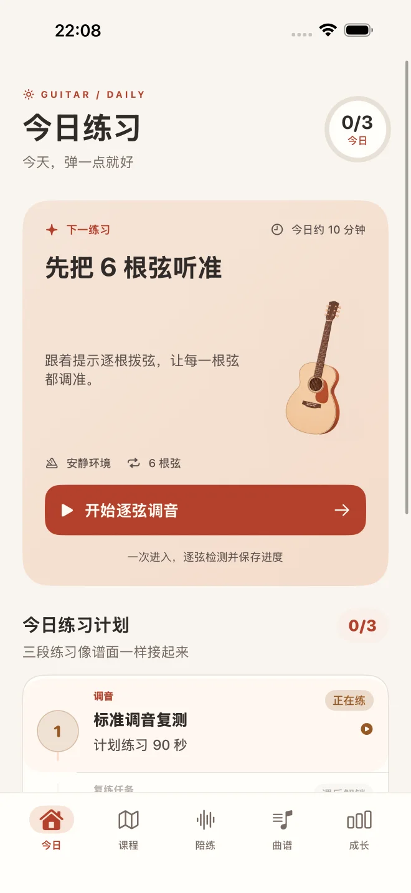
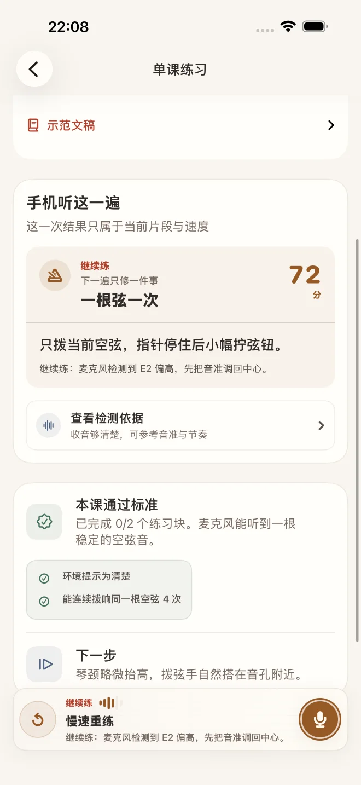
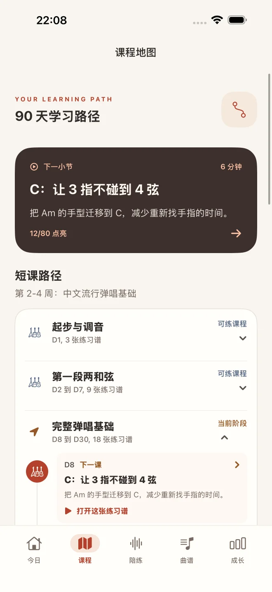
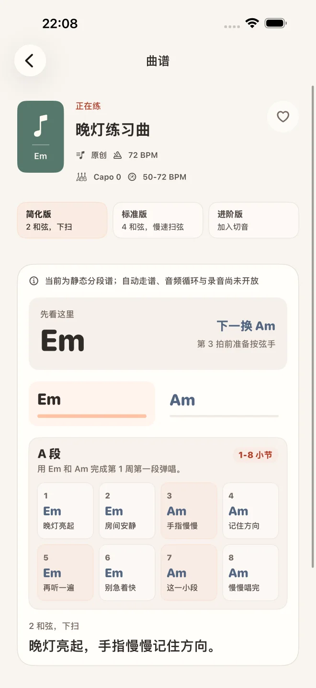
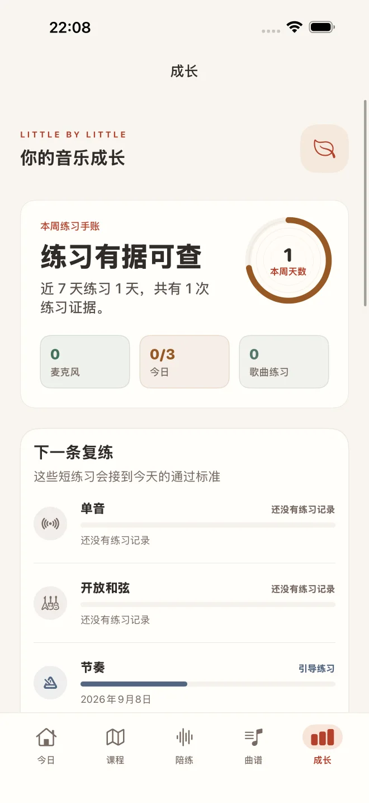
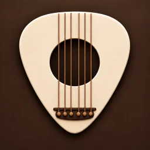

第一次拿起民谣吉他
从持琴、拨弦和六根弦调音开始，不跳过影响后续练习的基础动作。
现已在 App Store 免费下载
每天留出 10-15 分钟。吉他自习室会把今天该练什么、怎么判断进步、卡住时先修哪里，整理成一条能跟下去的 90 天路径。
当前版本 1.1，支持 iOS / iPadOS 17.0 或更高版本。免费，无订阅与内购。

不是把课程和曲谱堆在一起。每天的练习会结合当前进度、最近弱项和正在学的歌曲，安排成可以立刻动手的短任务。

听见结果，也看得懂下一步。
80 节短课和 72 首原创与公版练习曲，从开箱、持琴、调音开始，逐步进入开放和弦、扫弦、段落练习、指弹基础与完整弹唱。每张截图都来自当前 App。
使用左右方向键或水平滚动查看更多页面。



零基础吉他入门
从吉他调音、开放和弦练习、常见扫弦节奏，到可以分段、变速练习的吉他谱，所有内容都围绕零基础学习者的真实进度组织。
从持琴、拨弦和六根弦调音开始，不跳过影响后续练习的基础动作。
围绕 Em、Am、C、G、D 等开放和弦，通过短练习和具体修正建立稳定的换弦动作。
用难度、速度和段落拆分练习曲，把和弦、扫弦、指弹基础与完整弹唱连起来。
